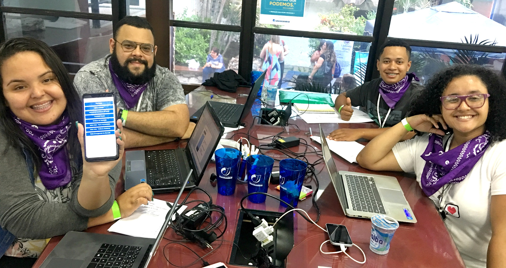

Sobre
A Universidade do Grande Rio - UNIGRANRIO, lança o 2° Hackathon Unigranrio - Unigranrio. Trata-se de uma maratona de programação multidisciplinar e colaborativa, onde grupos competem entre si desenvolvendo projetos que possam fornecer melhorias significativas ou solucionem problemas pertinentes ao tema proposto, por meio da aplicação eficiente e inteligente das tendências tecnológicas disponíveis, em um tempo de trabalho limitado de 24 horas.

Disposições Gerais
Participação
Qualquer pessoa acima de 18 anos pode participar, desde que alocada em uma das categorias dispostas neste regulamento. No entanto, os participantes devem estar atentos às seguintes concessões:
-
Permitido: será permitido a utilização de frameworks de desenvolvimento, simuladores ou ambientes virtuais de prototipagem, que facilitam o processo de trabalho.
- Não permitido: os participantes não podem concorrer com soluções que já estejam em fase avançada de desenvolvimento e, da mesma forma, não podem estar prototipadas em qualquer nível.
Categorias
Qualquer pessoa acima de 18 anos pode participar, desde que alocada em uma das categorias dispostas neste regulamento. No entanto, os participantes devem estar atentos às seguintes concessões:
| Categoria |
Descrição |
| Alunos graduação unigranrio |
Alunos regularmente matriculado em cursos de Graduação da Unigranrio.
|
| Alunos graduação visitante |
Alunos de outras instituições de ensino de nível superior regularmente matriculados.
|
| Profissionais |
Pessoas interessadas em participar que já estão inseridas no mercado de trabalho ou cursando pós-graduação relacionada à área de tecnologia.
|
| Em formação |
Alunos de ensino médio ou técnico, que visam fazer parte do setor de soluções tecnológicas.
|
Etapas e Calendário
Este evento contará com 4 (quadro) etapas distintas, cada uma contendo suas respectivas atividades e calendário, conforme o quadro abaixo.
| Etapas |
Atividades |
inicio |
Fim |
| Etapas de Inscrição | Etapa 1 | Divulgação do tema. | 08/04/2019 |
| Etapa de Seleção | Etapa 3 | Seleção das ideias. |
Divulgação das equipes e ideias selecionadas. |
>| Etapa Presencial | Etapa 4 | Credenciamento |
Desenvolvimento e prototipagem da solução. |
As etapas de 1 e 2 ocorrerão de forma online; a etapa 3 trata-se de uma etapa eliminatória; e a etapa 4, que é a etapa presencial com início no dia 26/04/2019, trata-se de uma etapa classificatória.